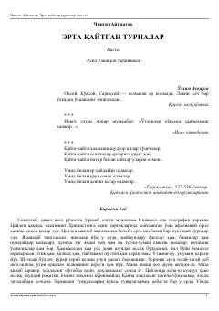

EQUrush davridagi og'ir sinovlarni yengib o'tayotgan qishloq bolalarining taqdiri haqidagi ta'sirli qissa.
Ushbu qissa Ikkinchi jahon urushi davridagi qirg'iz ovulining og'ir hayoti, maktab yoshidagi bolalarning kattalardek mashaqqatli mehnatga sho'ng'igani va ularning ruhiy olami haqida hikoya qiladi. Asar bosh qahramoni Sultonmurot va uning tengdoshlari timsolida urush davri bolalarining matonati, orzulari va mas'uliyat ҳissi yorqin ochib berilgan.